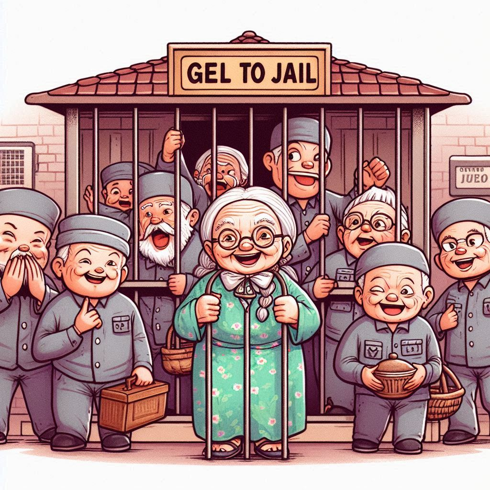

감옥에 가기로 한 메르타 할머니
목차
작가
카타리나잉엘만순드베리
출판일
2016년
감상평에 대한 AI그림
이 책의 주인공인 메르타 할머니는 우리가 생각하는 할머니의 이미지와는 조금 다른 사람이다. 메르타 할머니의 친구들도 마찬가지이다. 그들이 감옥에 가기로 결정하고 범죄라기엔 소소한 일들을 저지르는 것을 보면서 많이 웃었지만 한편으로는 그들이 감옥에 가기로 마음 먹게 만든 현실에 속상하기도 했다.

감상평에 대한 AI평가
~~~~AI평가~~~~~
✨ 책의 주제와 감정을 잘 표현함: 메르타 할머니와 친구들의 예상 밖 행동이 웃음을 주지만, 동시에 현실에 대한 안타까움을 느끼게 했다는 점을 잘 짚었다.
✨ 더 구체적인 예시가 있으면 좋음: 어떤 장면에서 웃었고, 어떤 현실적인 문제에 속상했는지 조금만 더 구체적으로 언급하면 감상에 깊이가 더해질 것 같다.
✨마무리를 더 정리하면 좋음: 마지막 문장을 "웃기면서도 씁쓸한 감정을 남긴 책이었다"처럼 정리하면 감상평이 더욱 깔끔하게 마무리될 수 있을 것 같다.